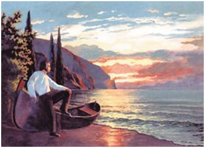
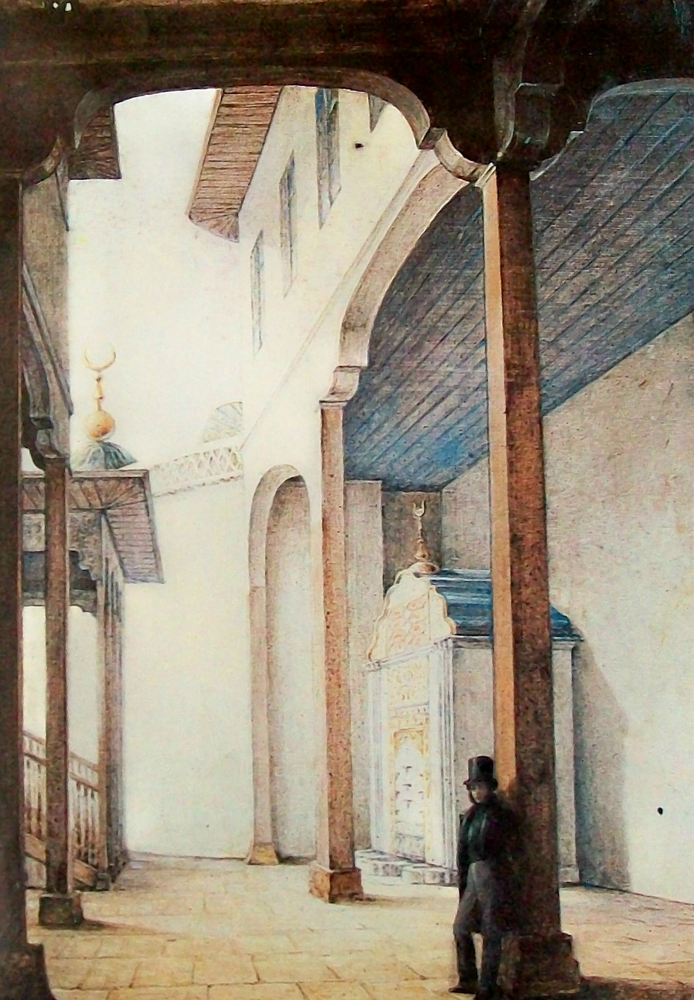
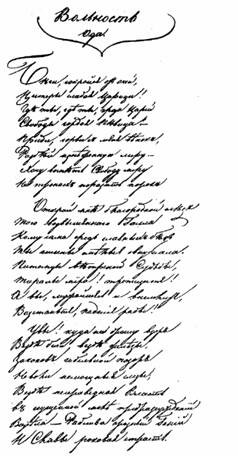
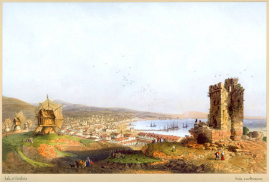

«Таврида»
Прекрасны вы, брега Тавриды,Когда вас видишь с корабля
При свете утренней Киприды,
Как вас впервой увидел я;
Вы мне предстали в блеске брачном:
На небе синем и прозрачном
Сияли груды ваших гор,
Долин, деревьев, сел узор
Разостлан был передо мною.
А там, меж хижинок татар...
Какой во мне проснулся жар!
Какой волшебною тоскою
Стеснялась пламенная грудь!
Но, муза! прошлое забудь

«Редеет облаков летучая гряда...»
Редеет облаков летучая гряда.Звезда печальная, вечерняя звезда!
Твой луч осеребрил увядшие равнины,
И дремлющий залив, и черных скал вершины.
Люблю твой слабый свет в небесной вышине;
Он думы разбудил, уснувшие во мне:
Я помню твой восход, знакомое светило,
Над мирною страной, где всё для сердца мило,
Где стройны тополы в долинах вознеслись,
Где дремлет нежный мирт[7] и темный кипарис,
И сладостно шумят полуденные волны.
Там некогда в горах, сердечной думы полный,
Над морем я влачил задумчивую лень,
Когда на хижины сходила ночи тень –
И дева юная во мгле тебя искала
И именем своим подругам называла.

« Я вижу берег отдаленный, Земли полуденной волшебные края…»
Период южной ссылки – романтический период творчества А.С. Пушкина. Романтизм поэта не был навязан модными веяниями западной литературы, он являлся отражением того времени и тех событий, которые имели место на его родине – ведь тогда в русском обществе происходили серьёзные изменения: носители наиболее передовых на тот момент идей задумывались о переходе от революционных мечтаний к революционным действиям. На юге Империи поэт попадает в раскалённую среду революционной романтики. Лирика поэта того времени и является отражением идей и чаяний той среды.
Почти все творчество Пушкина в то время – это романтические произведения. Первое стихотворение, созданное им в августе 1820 г. – «Погасло дневное светило» было написано под впечатлением от прекрасного путешествия в Гурзуф. Это была классическая романтическая элегия, однако, в ней происходит переход Пушкина от беспроблемной юности к творческой зрелости, при котором поэт осознаёт ответственность за свой талант, учится непредвзято судить сам себя.
Более поздние стихи Пушкина периода южной ссылки – это поэмы «Бахчисарайский фонтан» (1823 г.) и «Цыганы» (1824 г.). В них герои ещё более романтизированы, чем в «Пленнике». Критика общества, выраженная словами Алеко, главного героя «Цыган», это не просто развенчание старых идеалов, это декларирование романтического героя, вообще никак не связанного с обществом, окончательно порвавшего с ним. Но здесь Пушкин как-бы хочет показать, к чему приводит «абсолютный романтизм», показывает что романтика, оторванная от реалий жизни, ни к чему хорошему не приведет. Именно в процессе написания «Цыган» происходит начало преображения Пушкина, его уход от романтизма; как раз тогда автор приступает к первым наброскам своего бессмертного произведения «Евгений Онегин».
Говоря кратко о южной ссылке Пушкина, можно сделать вывод: по окончании ссылки в творчестве автора наметился перелом. Пушкин попрощался со своим романтическим прошлым, с его героями и идеалами, он, как говорят, перешел на новый уровень. Он вырос. Переход от романтических поэм к реализму, от элегий к трагедиям совершался не только от перемены мыслей и идеалов в душе поэта, но и под воздействием обстоятельств, вносимых в его жизнь событиями того исторического периода.
Окончательную точку в своём романтическом периоде Пушкин поставил 7 апреля 1825 года, когда в деревеньке Воронич заказал панихиду по Джорджу Байрону. Многие восприняли этот жест, как очередную экстравагантную выходку поэта. Никто тогда не понимал, что эта панихида по «Байрону в себе». Пушкина-романтика больше не было, появился Пушкин-реалист.

«Погасло дневное светило...»
Погасло дневное светило;На море синее вечерний пал туман.
Шуми, шуми, послушное ветрило[2],
Волнуйся подо мной, угрюмый океан.
Я вижу берег отдаленный,
Земли полуденной волшебные края;
С волненьем и тоской туда стремлюся я,
Воспоминаньем упоенный...
И чувствую: в очах родились слезы вновь;
Душа кипит и замирает;
Мечта знакомая вокруг меня летает;
Я вспомнил прежних лет безумную любовь,
И всё, чем я страдал, и всё, что сердцу мило,
Желаний и надежд томительный обман...
Шуми, шуми, послушное ветрило,
Волнуйся подо мной, угрюмый океан.
Лети, корабль, неси меня к пределам дальным
По грозной прихоти обманчивых морей,
Но только не к брегам печальным
Туманной родины моей,
Страны, где пламенем страстей
Впервые чувства разгорались,
Где музы[3] нежные мне тайно улыбались,
Где рано в бурях отцвела
Моя потерянная младость,
Где легкокрылая мне изменила радость
И сердце хладное страданью предала.
Искатель новых впечатлений,
Я вас бежал, отечески края;
Я вас бежал, питомцы наслаждений,
Минутной младости минутные друзья;
И вы, наперсницы[4] порочных заблуждений,
Которым без любви я жертвовал собой,
Покоем, славою, свободой и душой,
И вы забыты мной, изменницы младые,
Подруги тайные моей весны златыя,
И вы забыты мной... Но прежних сердца ран,
Глубоких ран любви, ничто не излечило...
Шуми, шуми, послушное ветрило,
Волнуйся подо мной, угрюмый океан...
